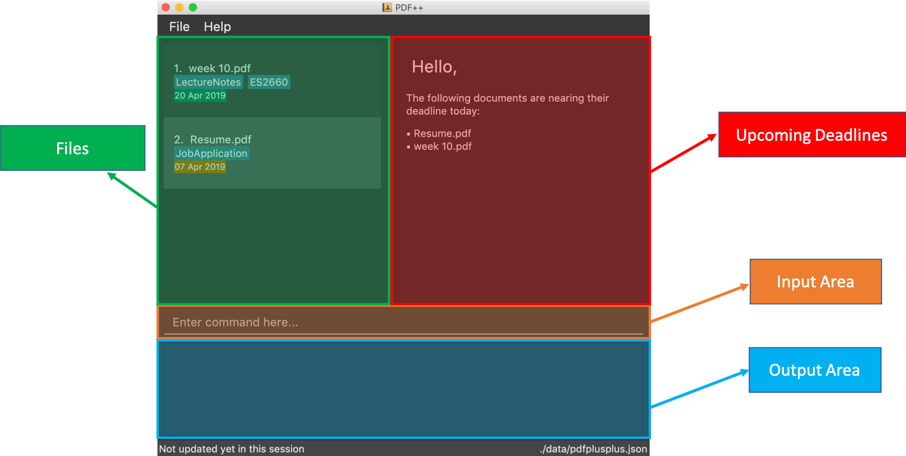
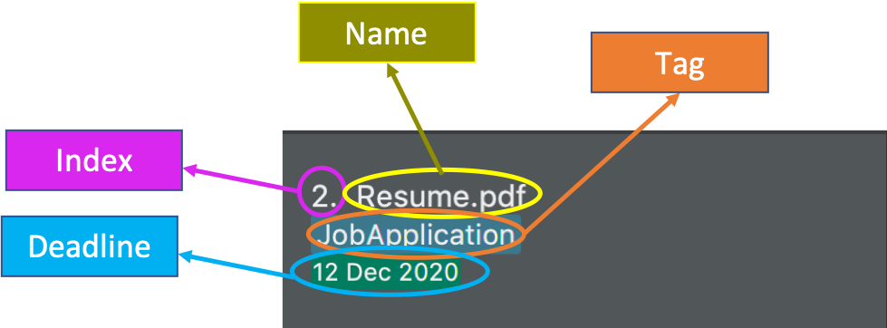

By: Team T12-4 Since: Feb 2019 Licence: MIT
1. Introduction
1.1. PDF++ ?
PDF++ is a desktop application that is meant for anyone who wants or needs a convenient tool that helps you manage all the documents in your computer. This application can be used by both Text Input (TI) and a Graphical User Interface (GUI) hence, both technical users and casual users can enjoy a comfortable experience using our program. All features provided by our application can be used via the TI and relevant feedback, based on your command, will be displayed in the Response Area of the application.
1.2. Proper Usage of PDF++
As PDF++ aims to replace your existing File Management System, all operations should be done through the application. In order to ensure smooth user experience, you should not perform any operation, such as removing, renaming or replacing, on the files that was previously added into the application outside of the application.
Furthermore, due to the properties of the Operating Systems, no operation can be performed on the files that are opened. Please ensure that your files are not opened before executing the command.
This File Management System plans to enhance your typical experience managing your documents and it strives to be the last document manager you will ever need. It includes a multitude of functions in elevating your PDF reading and management experience. There are many features offered by our application that you can refer to in the table of contents on the left side of this screen with many more to come! Are you fascinated by PDF++? What are you waiting for? Jump to the Section 2, “Quick Start” to get started. Enjoy!
2. Quick Start
-
Ensure you have Java version
9or later installed in your Computer. -
Download the latest
pdfplusplus.jarhere. -
Copy the file to the folder you want to use as the home folder for your PDF++.
-
Double-click the file to start the app. The GUI should appear in a few seconds.
 -
Type any commands in the Input Area, also known as the Command Box, highlighted by the Orange area and press Enter to execute it.
e.g. typinghelpin the command box and pressing Enter will open this PDF++ User Guide. -
Some example commands you can try:
-
list: lists all files in PDF++ -
addf/C:\Users\Raj\Documents\myfile.pdf: adds a PDF file namedmyfilefrom the mentioned directory to the PDF++ list. -
deleteindex: deletes the file indexed atindexof the list and all relevant information from PDF++. -
exit: exits the app
-
-
Refer to Section 3, “Features” for details of each command.
3. Features
| Please ensure that you have the permissions to Read, Write and Execute the files that you wish to manage through our application. Please use a web search, like Google, to assist you in identifying if you possess the permissions. If you are lacking these permissions our application may not be able to carry out the actions specified by you. |
| Please do not manipulate the files once you have added them to our application. Unforeseen actions such as moving, renaming and others might result in unexpected behaviour by the application. Our application is meant to replace the need for you to perform these actions manually on your files yourselves. |
Command Format
-
Words in
UPPER_CASEare the additional information that you need to input e.g. inadd f/FILENAME,FILENAMEis a parameter which can be used asadd f/myfile. -
Items with
… after them can be used multiple times or zero times e.g.t/TAG…can be left blank or used multiple times,t/TagA t/TagB t/TagCetc. -
ALL Commands are to be entered in the Input Area that is highlighted in Orange.
-
ALL Responses to your input Commands will be displayed in the Output area that is highlighted in blue.
3.1. Viewing help : help
Format: help
The help command displays this current page for any references you may need or questions that you may require answers to.
3.2. Importing a file: add
The add command allows you to add a file through TI into to the application, or through the GUI.
The added file will appear in the Files Section, highlighted in green, shown above.
| Files with the same name can be added to our application provided that they are not in the same directory. Just as any Operating System would allow the existence of files with the same name in different directories. |
The Add feature has the following syntax:
add
add f/<PATH_TO_FILE> t/<TAG>…
-
f/refers to the command immediately following after this prefix is a file -
<PATH_TO_FILE>refers to the path to thePdfyou wish to add -
<TAG>…refers to the newTagyou wish to add. Leave this portion empty if you do not wish to tag this file. -
Entering
addwithout<INDEX>or<NEWDIRECTORY>will open the default file selection GUI for the user to add the file directly.
Please ensure that you have entered the full PATH_TO_FILE. Please refer to
Step-by-Step Guide — add below for detailed explanation.
|
3.2.1. Feature breakdown
Illustrated below is a sample usage scenario that provides a clear view to the inner workings of the Add feature.
Step 1: The user launches the application with either an existing set of Pdf or a new
sample set of Pdf stored within as shown below.

Step 2: The user navigates to the folder with the file and copy the directory.
-
For Windows Once the user has navigated to the folder, click on the address bar and copy
-
For Mac
Step 3: The user enters the add command into the CLI interface, following the
outlined syntax as illustrated below.
| Your users must type the file name after the directory copied at Step 2 |

[NOTE] you can enter add and hit enter, to open up a GUI for you to select the file you
wish to add.
Step 4: Upon hitting enter to execute the command, the AddCommandParser parses the input into several components that are required to be executed by the AddCommand.
Upon parsing, the parser then creates a new AddCommand that will be executed according to the your input.
Step 5: Upon receiving the necessary information from the parser, the AddCommand first
begins by checking for validity as shown below.
-
Duplicate
Pdffound in PDF++
-
Pdfdoes not exist in directory

-
Pdffound and no duplication in PDF++
Step 6: If the validity check and the individual property check passes, the file is then added to PDF++
As of v1.2, the Add feature is only capable of adding 1 Pdf file at a time. By v2.0,
the feature will support adding multiple files.
|
-
The file must be a PDF file (with .pdf extension).
Example:
-
add f/C:\Users\Raj\Documents\Tutorial3.pdf[Windows Operating System] -
add f//Users/raj/Desktop/CS2101 Lecture.pdf[Mac / Linux Operating System] -
add[Any Operating System]
3.3. Listing all files : list
The list command shows you a list of all files that are tracked by the application.
The files will be displayed in the Files Section of the application, highlighted in green.
Format: list
3.4. Sorting all files : sort
The sort command allows you to sort all the files in the application based on the input criteria.
Hence you may be able to, for example, sort the files by their name in ascending or descending order.
Format: sort CRITERIA ORDER
Example:
-
sort name up -
sort deadline down -
sort size up
3.5. Opening a file : open
The open command allows you to open an existing file, specified by the index of the file that is next to the name of the file in the Files Section, highlighted in green.
The selected file will then be opened with any application that you have set as the default for
your computer.
Format: open INDEX
Example:
-
open 3
3.6. Renaming a file : rename
The rename command allows you to change the name of a file, specified by thr index of the file that is next to the name of the file in the Files Section, highlighted in green.
The rename command has the following syntax:
rename <INDEX> n/<NEWNAME> t/<NEWTAG1>…
-
<INDEX>refers to the index of the file that you wish to edit. -
n/indicates that you are editing the name of the file -
<NEWNAME>refers to the new value that you would like to set the file Name to. -
<NEWTAG…>refers to the new Tag you wish to add. Leave this portion empty if you do not wish to tag this file.
Example:
* rename 1 n/newname.pdf
The index value can be referenced from the list in the main application, or from the
result of the Filter, Find or List feature.
|
3.6.1. Feature Breakdown
Step 1: The user launches an application with either an existing set of Pdf or a
new sample set of Pdf stored within as shown below.

Step 2: The user chooses a Pdf that they wish to edit, in this case g.pdf, and
enters the rename command into the CLI Interface, following the outlined Syntax as
illustrated below.

Step 3: Upon hitting enter to execute the command, the EditCommandParser parses the input into relevant objects that are required to be executed by the EditCommand object. Upon parsing, the parser then creates a new EditCommand that will execute the user’s input.
Step 4: Upon receiving the necessary information from the parser, the EditCommand first begins by checking for validity as shown below.

Step 5: If the validity check and the individual property check passes, the file is then effectively renamed within PDF++ and in the actual directory, thus resulting in an output as shown below.

As of V1.2, the Edit Feature removes any existing Tag s and replaces them with those
input by the user (If any). By V1.4 The user will be able to select tags he wishes
to remove or add.
|
3.7. Tagging a file : tag
The tag command allows you to add or remove a tag to a file, specified by the index of the file that is next to the name of the file in the Files Section, highlighted in green.
The prefixes -a refers to "add" and -r refers to "remove".
Format: tag INDEX -a [t/TAG]… [To add a tag]
Format: tag INDEX -r [t/TAG]… [To remove a tag]
Example:
-
tag 1 -a t/CS2103T t/SE -
tag 2 -r t/tutorials
3.8. Deleting a file : delete
The delete command lets you to delete a file from the application and/or your computer.
In order to delete the file completely from the computer, you must specify the hard parameter to the delete command.
The file that is to be deleted must be specified by the index of the file that is next to the name of the file in the Files Section, highlighted in green.
Format: delete INDEX
Format: delete INDEX hard
Example:
-
delete 4 -
delete 3 hard
3.9. Moving a file : move
The move command allows you to move a file, specified by the index of the file that is next to the name of the file in the Files Section, highlighted in green.
The file can be moved from its current directory on your computer to another directory on your computer.
The move file also has a User Interface Option to allow for an easier file moving experience.
Format: move INDEX d/DIRECTORY
Example:
-
move 1 d/C:\User\Jeremy\Downloads[Windows Operating System] -
move 1 d//Users/jet/Documents/Important[Mac / Linux Operating System] -
move 1[Any Operating System]
3.10. Exiting the program : exit
This command lets you exit the program.
Format: exit
3.11. Retrieving information about a file:
In order to see a little more information on a file, clicking the file in the Files Section, highlighted in green, allows you to view more information pertaining to that file.
This information will be displayed in the Upcoming Deadlines Area, highlighted in red.
3.12. Setting a deadline for the file : deadline
Set or remove a deadline for the a file, specified by the index of the file that is next to the name of the file in the Files Section, highlighted in green.
A file’s deadline is located under its name and has 4 colours to indicate the amount of time you have before it is due.
The colour Green, indicates that there is more 7 days till the deadline is due, as shown below.

The colour Orange, indicates that you have 7 or less days till it is due. As shown below.

The colour Red, indicates that you have reached or failed to complete the task by the due date, as shown below

The colour Blue indicates that you have completed the set task.
All deadlines are also displayed in the Deadlines Section of the application highlighted by Red.
Format: deadline INDEX date/DATE [To Set a Deadline]
Format: deadline INDEX done [To Complete a Deadline]
Format: deadline INDEX remove [To remove a Deadline]
Examples:
-
deadline 1 date/20-02-2019 -
deadline 1 done -
deadline 1 remove
|
The date must be in the format of dd-mm-yyyy. |
3.13. Filter files by tags: filter
The filter command shows you only the files that contain the tags specified in the filter command.
Format: filter t/TAG…
Examples:
-
filter t/JobApplication -
filter t/Lecture t/Week10
3.14. Undo & redo command: undo & redo
The undo and redo commands allow you to reverse an action that was previously done on our application.
|
You CANNOT Undo or Redo an encrpytion command.
This functionality has been disabled for security reasons. |
Format: undo [To Undo an Action]
Format: redo [To Redo an Action]
3.15. Encrypting & Decryption: encrypt & decrypt
The command encrypt allow you to lock your files such that they cannot be accessed without a password that you had specified. Similarly, the command decrypt will let you remove the password that you had set for the file.
Format: encrypt INDEX password/PASSWORD [To Encrypt a file]
Format: decrypt INDEX password/PASSWORD [To Decrypt a file]
Examples:
-
encrypt 2 password/ThisIsNotASecurePassword -
decrypt 2 password/ThisIsNotASecurePassword
3.16. Merging Files: merge
With the merge command , you can merge two or more files into a new single file.
Format: merge INDEX INDEX…
Examples:
-
merge 1 2 3 -
merge 1 2 1 -
merge 1 1
| If the combined file size is > 100MB, the operation will take more than a minute to execute. Please give the application some time to completely execute the operation. |
3.17. Saving the data
PDF++ data are saved in the hard disk automatically after any command that changes the data.
There is no need to save manually.
4. Command Summary
-
Add
add f/PATH_TO_FILE
e.g.add f/C:\Users\Raj\Documents\Tutorial3.pdf -
Rename
rename INDEX n/NEW_NAME
e.g.rename 2 n/Resume.pdf -
List :
list -
Open :
open INDEXe.g.open 3 -
Delete :
delete INDEX
e.g.delete 4 -
Move :
move INDEX d/LOCATIONe.g.move 3 d/C:\User\Jeremy\Downloads -
Tag :
tag INDEX t/TAG…
e.g.tag 3 t/DijkstraGraph t/Tutorial t/CS2040 -
Filter :
filter tx/KEYWORD…
e.g.filter tx/GraphsDFS -
Deadline :
deadline INDEX DATEordeadline INDEX
e.g.deadline 3 20-02-2019,deadline 2 -
Encrypt :
encrypt INDEX password/PASSWORD
e.g.encrypt 2 password/superPASSWORD -
Decrypt :
decrypt INDEX password/PASSWORD
e.g.decrypt 2 password/superPASSWORD -
Merge :
merge INDEX INDEX…
e.gmerge 1 2 1 -
Help :
help -
Exit :
exit
5. Glossary
-
INDEX : The number that references a file managed by the application.
-
Command : Keyword that tells the application what to do.
-
GUI : Graphical User Interface
-
TI : Text Input